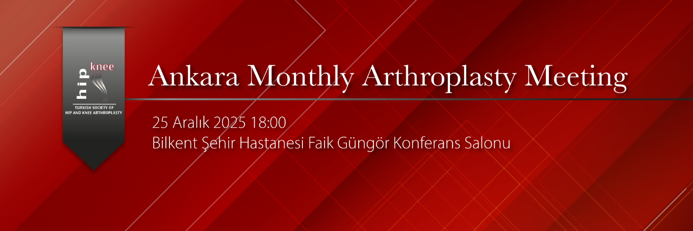

Dear Colleagues,
As the Turkish Hip and Knee Arthroplasty Association, we are pleased to announce that our second Ankara Monthly Arthroplasty Meeting will be held with your valued participation on December 25, 2025, at 18:00, hosted by Bilkent City Hospital.
The main topic of this meeting will be “Approaches in Hip Arthroplasty.” We will have the opportunity to listen to different surgical approaches presented by our esteemed professors Prof. Dr. Bülent Atilla, Prof. Dr. Bülent Erdemli, and Prof. Dr. Bülent Özkurt.
The meeting, which will also include case discussions and article presentations, is open to all colleagues interested in the topic.
Kind regards,
Prof. Dr. Kerem Başarır
Moderator:
Prof. Dr. Bülent Özkurt
Program:
18:00 – 18:30 Refreshments & Dinner
18:30 – 18:40 “Direct Anterior Approach” – Prof. Dr. Bülent Atilla
18:40 – 18:50 “Posterior Approach” – Prof. Dr. Bülent Erdemli
18:50 – 19:00 “Anterolateral Approach” – Prof. Dr. Bülent Özkurt
19:00 – 19:15 Discussion
19:15 – 19:30 Two Article Presentations
19:30 – 19:45 Case Discussions
Note:
For planning purposes, colleagues who wish to have their cases discussed or to present their results are kindly requested to contact us prior to the meeting.
Contact Information:
Dr. Bülent Özkurt
Email: drbulentozkurt@yahoo.com
Dr. Kerem Başarır
Email: basarirkerem@yahoo.com
